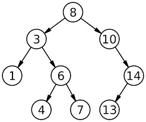

BST and AVL Tree
This project implements a BST tree, with an option to make it an AVL Tree.
Key Features
- This program reads integers from a file and creates two trees for the same data (BST and AVL).
- The output prints a visualization of the tree, along with certain characteristics of the tree.
- This program finds: height, range, list of nodes at a specified level, and the sum of the leaf nodes.
Note:This project is in the process of being uploaded to github
Source Code All Projects